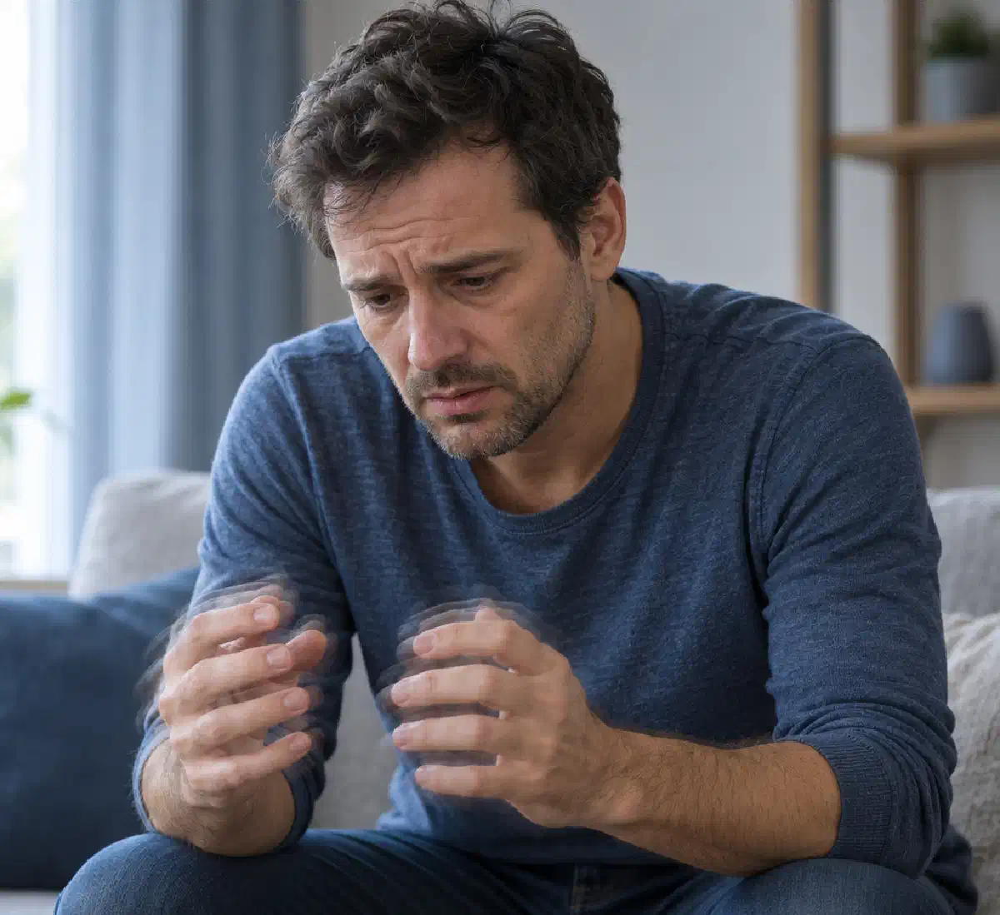

+38(068) 79 72 782
+38(068) 79 72 782Лікування тремору та тривоги після алкоголю
Причини, симптоми та медична допомога при алкогольній абстиненції


Безкоштовна консультація, працюємо цілодобово 24/7
Причини, симптоми та медична допомога при алкогольній абстиненції

Дата написання: 20 жовт. 2026 р.
Останнє оновлення: 20 жовт. 2026 р.
Лікування тремору та тривоги після алкоголю необхідне у випадках, коли після припинення вживання спиртних напоїв з’являються тремтіння рук, внутрішнє занепокоєння, прискорене серцебиття, підвищена пітливість, безсоння та інші симптоми порушення роботи нервової системи. Подібні прояви можуть виникати після епізоду вживання алкоголю, проте особливо характерні для алкогольного синдрому відміни, який розвивається в людей із фізичною залежністю від спиртного. Вираженість симптомів залежить від тривалості вживання алкоголю, стану організму, супутніх захворювань і попередніх епізодів абстиненції. При легких порушеннях самопочуття може поступово покращуватися, але у важких випадках існує ризик судом, порушень серцевого ритму та алкогольного делірію. Лікування алкогольної абстиненції повинно починатися з оцінки стану пацієнта та визначення ризику небезпечних ускладнень. Медична допомога спрямована на зменшення тремору, тривожності, відновлення сну, корекцію супутніх порушень і запобігання прогресуванню синдрому відміни.
Тремор і тривожність після вживання алкоголю виникають унаслідок змін у роботі центральної та вегетативної нервової системи. Етанол чинить пригнічувальний вплив на певні процеси в головному мозку, тимчасово посилюючи гальмівні механізми нервової регуляції. При регулярному вживанні спиртного організм поступово адаптується до його присутності. Коли концентрація алкоголю в крові знижується, сформовані компенсаторні зміни можуть призводити до надмірного збудження нервової системи. У результаті з’являються тремтіння рук, внутрішнє напруження, дратівливість, занепокоєння та порушення сну. У деяких пацієнтів одночасно спостерігаються підвищена пітливість, тахікардія та підвищення артеріального тиску. Особливо вираженими такі симптоми бувають після тривалих запоїв і за сформованої алкогольної залежності. Однак тремор після алкоголю не завжди пов’язаний виключно з абстиненцією: можливі зневоднення, зниження рівня глюкози та інші причини. Тому при виражених або повторюваних симптомах необхідна медична оцінка.
Тривале вживання алкоголю призводить до змін нейрохімічних процесів, відповідальних за збудження та гальмування нервової системи. Етанол впливає на роботу гамма-аміномасляної кислоти (ГАМК), яка бере участь у гальмуванні нервової активності, а також на глутаматну систему, пов’язану зі збудженням нейронів. При хронічному впливі спиртного мозок адаптується до зміненого балансу цих механізмів. Після різкого припинення вживання алкоголю гальмівні процеси стають відносно недостатніми, а збуджувальні механізми — надмірно активними. Додатково посилюється активність симпатичної нервової системи, що супроводжується викидом катехоламінів, прискоренням пульсу, підвищенням тиску та пітливістю. Такі зміни пояснюють появу алкогольного тремору, тривожності, безсоння та підвищеної чутливості до зовнішніх подразників. При тяжкому синдромі відміни надмірне збудження нервової системи може призводити до судомних нападів і делірію. Саме тому детоксикація від алкоголю при фізичній залежності потребує не лише підтримувальних заходів, а й оцінки необхідності специфічного лікування абстиненції.
Тремтіння рук і сильна тривога після алкоголю можуть мати кілька причин, які іноді діють одночасно. Найбільш значущою є алкогольна абстиненція, що виникає після різкого зменшення або припинення вживання спиртного в людини з фізичною залежністю. Іншими можливими чинниками стають зневоднення, недостатнє харчування, порушення електролітного балансу, зниження рівня глюкози крові та виражене недосипання. Алкоголь також здатний посилювати прояви наявних тривожних розладів і провокувати серцебиття, яке людина сприймає як ознаку небезпеки. У деяких пацієнтів тремтіння може бути пов’язане із захворюваннями щитоподібної залози, неврологічними порушеннями або дією лікарських препаратів. Особливої уваги потребують випадки, коли симптоми регулярно виникають після запоїв, посилюються в перші години тверезості або супроводжуються вираженою вегетативною реакцією. У таких ситуаціях необхідно виключити алкогольний синдром відміни та визначити потребу в лікуванні під наглядом лікаря.
Алкогольний тремор являє собою мимовільні ритмічні коливання м’язів, які часто стають помітними в кистях рук після припинення або суттєвого зменшення вживання алкоголю. Зазвичай тремтіння посилюється під час витягування рук уперед, спроби утримувати предмети або виконувати точні рухи. Одночасно можуть спостерігатися тривожність, пітливість, прискорене серцебиття та порушення сну. Звичайне фізіологічне тремтіння може виникати при перевтомі, сильному хвилюванні, нестачі сну, вживанні кофеїну або фізичному перенапруженні. На відміну від алкогольної абстиненції, воно не обов’язково пов’язане з припиненням тривалого вживання спиртного та зазвичай не супроводжується комплексом характерних симптомів синдрому відміни. Однак визначити причину тремору лише за зовнішнім виглядом неможливо. При стійкому або наростаючому тремтінні, особливо після запою, потрібна консультація нарколога або іншого лікаря. Якщо тремор супроводжується порушенням свідомості, судомами або вираженою слабкістю, необхідно виключити невідкладні стани.
Алкогольна абстиненція розвивається в людей із фізичною залежністю після різкого припинення або значного зменшення вживання спиртних напоїв. Перші симптоми часто з’являються через 6–24 години після зниження концентрації алкоголю, хоча конкретні терміни можуть відрізнятися. Пацієнти скаржаться на тремтіння рук, внутрішнє напруження, дратівливість, пітливість, безсоння, нудоту та прискорене серцебиття. При помірній і тяжкій абстиненції можливі підвищення артеріального тиску, виражене психомоторне збудження та значне погіршення загального стану. Найнебезпечнішими ускладненнями є генералізовані судомні напади, галюцинації та алкогольний делірій. Судоми частіше виникають у перші 6–48 годин, а делірій зазвичай розвивається пізніше, нерідко через 48–96 годин після припинення вживання. Однак ускладнення можуть виникати й поза типовими часовими інтервалами. Зняття алкогольної абстиненції потребує визначення ступеня тяжкості синдрому та вибору безпечних умов лікування.
Після тривалого запою тремор і тривожність нерідко супроводжуються цілим комплексом фізичних і психологічних порушень. До характерних симптомів належать виражене тремтіння рук, внутрішнє занепокоєння, дратівливість, підвищена пітливість, прискорене серцебиття, нудота, головний біль і порушення сну. Пацієнти можуть відзначати зниження апетиту, слабкість, труднощі з концентрацією уваги та підвищену чутливість до світла або звуків. Іноді виникають неприємні відчуття в грудях, відчуття нестачі повітря та нападоподібний страх. При цьому подібні скарги не можна автоматично пояснювати лише алкогольною абстиненцією: необхідно виключати серцево-судинні, обмінні та інші захворювання. У деяких людей симптоми посилюються в ранкові години, коли концентрація алкоголю в організмі суттєво знижується. При тяжкому перебігу з’являються виражене збудження, сплутаність свідомості, галюцинації або судоми. Такі ознаки потребують екстреної медичної допомоги.
Внутрішнє занепокоєння та відчуття страху після алкоголю часто пов’язані з порушенням балансу нейромедіаторів і підвищеною активністю вегетативної нервової системи. Під час вживання спиртного людина може відчувати тимчасове розслаблення та зниження суб’єктивної тривожності. Після зменшення концентрації етанолу в деяких людей виникає протилежна реакція: посилюються нервове напруження, дратівливість і відчуття емоційної нестабільності. За сформованої алкогольної залежності такі прояви можуть бути частиною синдрому відміни. Додатково тривогу здатні посилювати безсоння, зневоднення, почуття провини, конфлікти та страх за власне здоров’я. Прискорене серцебиття й тремтіння іноді сприймаються як ознаки серйозного захворювання, унаслідок чого занепокоєння стає ще сильнішим. Для вибору лікування необхідно встановити, чи пов’язаний стан з абстиненцією, самостійним тривожним розладом або іншим захворюванням. При виражених симптомах важливо не обмежуватися самостійним прийманням заспокійливих засобів, оскільки деякі препарати небезпечні в поєднанні з алкоголем.
Панічні атаки після вживання алкоголю можуть виникати на тлі підвищеної тривожності, порушення сну, вегетативної нестабільності та алкогольного синдрому відміни. Для панічної атаки характерна раптова поява інтенсивного страху, що супроводжується серцебиттям, тремтінням, пітливістю, запамороченням, відчуттям нестачі повітря та страхом втратити контроль над собою. Іноді пацієнти описують стан як наближення смерті або серйозного серцевого нападу. Однак схожі симптоми можуть виникати при порушеннях серцевого ритму, гіпоглікемії, інтоксикації та інших небезпечних станах. Тому при першому вираженому нападі, болю в грудях, непритомності або значній задишці необхідна термінова медична оцінка. Якщо тривожні напади з’являються після кожного запою, слід виключити фізичну залежність від алкоголю. Лікування може включати контроль абстиненції, психотерапевтичну допомогу та діагностику супутніх тривожних розладів. Самостійне використання сильнодійних заспокійливих препаратів не рекомендується.
Безсоння, пітливість і тахікардія після запою часто пояснюються надмірною активністю симпатичної нервової системи на тлі алкогольної абстиненції. При тривалому вживанні спиртного організм адаптується до його пригнічувального впливу. Коли надходження алкоголю припиняється, розвивається стан підвищеного нервового збудження. У результаті людина відчуває труднощі із засинанням, часто прокидається вночі, скаржиться на тривожні сновидіння та відчуття внутрішнього напруження. Підвищена пітливість може супроводжуватися ознобом, а прискорене серцебиття — відчуттям пульсації та занепокоєнням. У деяких випадках спостерігається підвищення артеріального тиску. Однак тахікардія також може бути пов’язана зі зневодненням, аритмією, інфекцією та іншими причинами. При вираженому серцебитті важливо оцінити пульс, артеріальний тиск і за необхідності виконати електрокардіографію. Лікування спрямоване на усунення основного порушення, а не лише на тимчасове полегшення окремих симптомів.
Тривалість тремору та тривожності після алкоголю залежить від причини симптомів, тяжкості залежності та загального стану організму. При легких проявах, пов’язаних із похміллям, самопочуття нерідко покращується протягом доби, хоча окремі симптоми можуть зберігатися довше. При алкогольній абстиненції тремтіння, пітливість, тривожність і безсоння часто з’являються в перші 6–24 години після припинення вживання спиртного. Найбільш виражені прояви синдрому відміни зазвичай спостерігаються протягом перших кількох діб. При неускладненому перебігу гострі симптоми часто зменшуються протягом 3–5 днів, іноді зберігаючись до тижня й довше. Порушення сну, емоційна нестабільність і підвищена тривожність у деяких пацієнтів тривають кілька тижнів. При цьому тривалість відновлення індивідуальна. Якщо тремор посилюється, з’являються порушення свідомості, судоми або галюцинації, очікувати самостійного покращення небезпечно. Такі симптоми можуть вказувати на ускладнену абстиненцію та потребують негайної медичної допомоги.
Тремор і тривога після алкоголю стають особливо небезпечними, коли супроводжуються ознаками тяжкої алкогольної абстиненції або інших гострих захворювань. Приводом для невідкладного звернення є судоми, сплутаність свідомості, виражене збудження, галюцинації, втрата свідомості, біль у грудях, утруднене дихання та порушення серцевого ритму. Додаткову небезпеку становлять багаторазове блювання, неможливість пити рідину, виражене зневоднення та значні коливання артеріального тиску. Особливо уважно необхідно ставитися до пацієнтів, у яких раніше спостерігалися судоми або алкогольний делірій після припинення вживання спиртного. Високий ризик ускладнень також можливий у людей похилого віку та пацієнтів із серйозними хронічними захворюваннями. При появі небезпечних симптомів необхідно викликати екстрену медичну допомогу за номером 103 або 112. Навіть якщо тремтіння та тривожність тимчасово зменшуються, це не виключає подальшого прогресування абстиненції в перші дні після припинення вживання алкоголю.
Похмілля та алкогольна абстиненція можуть супроводжуватися схожими симптомами, проте відрізняються причинами виникнення та потенційною небезпекою. Звичайне похмілля розвивається після вживання спиртного та може проявлятися головним болем, нудотою, слабкістю, спрагою та підвищеною чутливістю до зовнішніх подразників. Воно можливе навіть у людини без алкогольної залежності. Алкогольний синдром відміни виникає внаслідок нейрофізіологічної адаптації до тривалого вживання спиртного та частіше спостерігається в пацієнтів із фізичною залежністю. Окрім тремтіння й тривоги, при абстиненції можуть з’являтися виражена пітливість, тахікардія, підвищення тиску, психомоторне збудження та безсоння. У тяжких випадках виникають судоми й делірій, які не характерні для звичайного похмілля. Якщо людині стає погано щоразу після припинення тривалого вживання алкоголю, це привід звернутися до нарколога. Лікування похмільного синдрому та медична допомога при алкогольній абстиненції мають різні завдання, тому важливо правильно визначити причину симптомів.
Можливість самостійного полегшення симптомів залежить від їхньої причини та вираженості. При легкому похміллі без ознак фізичної залежності зазвичай рекомендуються відпочинок, достатнє вживання рідини, повноцінне харчування та відмова від подальшого вживання спиртного. Однак виражене тремтіння, сильна тривожність, серцебиття та безсоння після тривалого запою можуть вказувати на алкогольну абстиненцію. У такій ситуації спроби самостійного лікування небезпечні. Особливо небезпечно різко припиняти тривале вживання алкоголю без медичного плану за наявності тяжкої фізичної залежності або попередніх ускладнень синдрому відміни. Не можна самостійно поєднувати алкоголь зі снодійними, транквілізаторами або іншими седативними препаратами. Повторне вживання спиртного для тимчасового зменшення тремтіння також не є безпечним лікуванням і може підтримувати залежність. При підозрі на абстиненцію необхідна медична оцінка, щоб визначити ризик судом, делірію та інших ускладнень.
Звернутися до нарколога рекомендується, якщо тремор виникає після припинення вживання спиртного, повторюється після запоїв або супроводжується тривожністю, пітливістю, безсонням і прискореним серцебиттям. Особливо важливо отримати консультацію пацієнтам, які регулярно вживають алкоголь у великих кількостях, відчувають ранкове тремтіння або раніше стикалися з вираженими симптомами відміни. Лікар уточнює тривалість вживання спиртного, час останньої дози алкоголю, наявність хронічних захворювань і попередні епізоди абстиненції. За необхідності оцінюються артеріальний тиск, частота серцевих скорочень, рівень глюкози, електролітів та інші показники. Виклик нарколога додому може розглядатися для первинної оцінки пацієнта за стабільного стану, але не замінює госпіталізацію при високому ризику ускладнень. Якщо з’являються судоми, сплутаність свідомості або галюцинації, необхідно звертатися безпосередньо по екстрену медичну допомогу.
Лікування алкогольного тремору та тривожності під наглядом лікаря спрямоване на зниження надмірної активності нервової системи, зменшення суб’єктивного дискомфорту та запобігання ускладненням синдрому відміни. Перед призначенням терапії спеціаліст оцінює вираженість симптомів, рівень свідомості, пульс, артеріальний тиск, ступінь зневоднення та наявність супутніх захворювань. Для оцінки тяжкості абстиненції можуть застосовуватися спеціальні клінічні шкали, зокрема CIWA-Ar. При помірній і тяжкій абстиненції основу медикаментозного лікування часто становлять бензодіазепіни, які призначаються та контролюються медичним спеціалістом. За наявності показань проводиться корекція дефіциту тіаміну та водно-електролітних порушень. Додатково може знадобитися спостереження за серцевою діяльністю та неврологічним станом. Медична допомога при алкогольній абстиненції може надаватися амбулаторно лише за відповідного рівня ризику та можливості регулярного спостереження. Пацієнтам із тяжкою симптоматикою потрібне стаціонарне лікування.
Лікування алкогольної абстиненції після тривалого запою починається з медичного огляду та визначення ступеня тяжкості синдрому відміни. Лікар уточнює тривалість вживання спиртного, обсяг алкоголю, час останнього приймання та попередні ускладнення. Особливе значення мають відомості про судоми, галюцинації, алкогольний делірій і супутні захворювання. Після оцінки стану визначається місце лікування — амбулаторне спостереження або стаціонар. Основними завданнями є зменшення збудження нервової системи, профілактика судом і делірію, відновлення водно-електролітного балансу та корекція виявлених порушень. За необхідності застосовуються лікарські препарати, тіамін та інші медичні заходи. Важливо розуміти, що лікування абстинентного синдрому після запою не обмежується однією крапельницею або короткочасним зменшенням тремору. Після усунення гострих симптомів необхідно оцінити ступінь алкогольної залежності та запропонувати подальшу терапію, спрямовану на запобігання повторним запоям.
Вибір лікарських препаратів при алкогольному треморі та тривожності залежить від тяжкості синдрому відміни, супутніх захворювань і ризику ускладнень. При помірній і тяжкій алкогольній абстиненції основними засобами є бензодіазепіни, які зменшують надмірне збудження нервової системи та допомагають запобігати судомам. У певних клінічних ситуаціях лікар може використовувати препарати на основі діазепаму, лоразепаму або інших представників цієї групи. При легкій абстиненції в ретельно відібраних пацієнтів іноді розглядаються карбамазепін або габапентин, проте вибір залежить від медичних показань та умов спостереження. За наявності ризику дефіциту вітаміну B1 призначається тіамін, необхідний для профілактики серйозних неврологічних ускладнень. Додаткова терапія визначається результатами обстеження. Самостійно приймати транквілізатори, протисудомні або снодійні препарати небезпечно, особливо за наявності алкоголю в організмі. Поєднання седативних ліків зі спиртним може призвести до пригнічення дихання, втрати свідомості та інших тяжких наслідків.
Інфузійна терапія після вживання алкоголю застосовується за медичними показаннями, насамперед при вираженому зневодненні, багаторазовому блюванні, неможливості самостійно поповнити рідину та певних порушеннях електролітного балансу. Крапельниця від алкоголю може включати розчини для поповнення рідини та корекції виявлених порушень, проте її склад і об’єм визначаються індивідуально. За наявності показань лікар додатково призначає тіамін та інші препарати. Слід враховувати, що внутрішньовенне введення розчинів саме по собі не усуває механізм алкогольної абстиненції та не забезпечує захисту від судом або делірію. При помірному й тяжкому синдромі відміни необхідна специфічна медикаментозна терапія. Надмірне введення рідини може бути небезпечним при серцевій і нирковій недостатності, тому крапельниці не повинні призначатися автоматично кожному пацієнту. Крапельниця після запою вдома допустима лише після медичної оцінки та за відсутності показань до госпіталізації. При тяжкій абстиненції потрібне лікування в умовах стаціонару.
Відновлення нервової системи після тривалого вживання алкоголю потребує часу та комплексного підходу. Після припинення вживання спиртного поступово нормалізуються процеси нервової регуляції, проте швидкість відновлення залежить від тривалості залежності, віку, стану здоров’я та наявності неврологічних ускладнень. На ранніх етапах особливе значення мають безпечне лікування абстиненції, повноцінне харчування, відновлення сну та корекція дефіциту вітамінів, насамперед тіаміну. При хронічному вживанні алкоголю також можливі порушення пам’яті, концентрації уваги, емоційної регуляції та периферичної чутливості. Деякі зміни поступово зменшуються за умови підтримання тверезості, тоді як інші потребують тривалого лікування та реабілітації. При збереженні тремору, порушень координації або когнітивних симптомів може знадобитися консультація невролога. Відновлення організму після алкоголю передбачає не лише покращення фізичного стану, а й лікування самої алкогольної залежності, повноцінну психологічну підтримку та профілактику повторного вживання.
Безсоння, дратівливість і тривожні напади після запою часто виникають на тлі порушеної роботи нервової системи та можуть зберігатися певний час після завершення гострої абстиненції. Найважливішим завданням є визначення причини симптомів і виключення ускладнень алкогольного синдрому відміни. При вираженій абстиненції лікування спрямоване на стабілізацію нервової системи з використанням препаратів, призначених лікарем. Після завершення гострого періоду велике значення мають регулярний режим сну, зменшення споживання кофеїну, повноцінне харчування та поступове відновлення фізичної активності. Якщо тривожність і панічні атаки тривають, необхідно оцінити наявність самостійного тривожного розладу. У таких випадках може застосовуватися когнітивно-поведінкова терапія та інші методи лікування. Самостійне тривале приймання снодійних і транквілізаторів не рекомендується через ризик залежності та небезпечних взаємодій. Допомога психолога при алкогольній залежності може бути корисною для подолання тривоги, формування навичок емоційної регуляції та профілактики рецидивів.
Профілактика судом та алкогольного делірію є одним з основних завдань медичного лікування алкогольної абстиненції. Найбільшу небезпеку становить різке припинення вживання спиртного в людей із вираженою фізичною залежністю, особливо якщо раніше вже виникали судомні напади або делірій. Ризик ускладнень також підвищується при тяжкій абстиненції, супутніх захворюваннях і вживанні деяких інших психоактивних речовин. Для зниження ймовірності небезпечних наслідків необхідно своєчасно оцінити тяжкість стану та визначити безпечні умови лікування. За наявності показань лікар призначає препарати для контролю збудження нервової системи та профілактики судом. Важливо регулярно контролювати свідомість, пульс, артеріальний тиск і динаміку симптомів. Лікування алкогольного делірію проводиться у стаціонарі, оскільки це потенційно загрозливий для життя стан. При судомах, галюцинаціях, вираженій дезорієнтації або раптовому погіршенні свідомості необхідно негайно викликати екстрену медичну допомогу.
Виведення із запою при вираженому треморі та тривожності потребує медичної оцінки, оскільки такі симптоми можуть вказувати на розвиток алкогольного синдрому відміни. Основна мета лікування полягає не лише у припиненні вживання спиртного, а й у безпечному подоланні періоду фізичної абстиненції. Лікар оцінює тривалість запою, вираженість тремтіння, частоту серцевих скорочень, артеріальний тиск, стан свідомості та наявність супутніх порушень. За необхідності призначаються лікарські препарати, спрямовані на зменшення надмірного нервового збудження та запобігання ускладненням. Додаткові заходи можуть включати корекцію зневоднення, електролітних порушень і дефіциту вітамінів. Не всім пацієнтам підходить амбулаторне лікування. Якщо існує ризик судом, делірію або інших тяжких ускладнень, необхідна госпіталізація. Після завершення гострого періоду рекомендується продовжити лікування алкогольної залежності, оскільки усунення абстиненції саме по собі не запобігає поверненню до вживання спиртного.
Лікування алкогольного тремору та тривожності вдома можливе не в усіх випадках. Амбулаторна допомога може розглядатися при легкому, неускладненому синдромі відміни, відсутності значущих факторів ризику та можливості регулярного медичного спостереження. Перед прийняттям рішення необхідно оцінити інтенсивність тремтіння, рівень тривожності, показники серцево-судинної системи, стан свідомості та ймовірність розвитку судом. Також враховуються вік пацієнта, хронічні захворювання, попередні епізоди тяжкої абстиненції та наявність близьких, здатних забезпечити підтримку. Наркологічна допомога вдома не повинна обмежуватися одноразовим введенням ліків без подальшого контролю стану. У перші дні після припинення вживання алкоголю симптоми можуть посилюватися, тому необхідна можливість своєчасно змінити тактику лікування. При галюцинаціях, судомах, сплутаності свідомості, тяжкому збудженні та нестабільних життєво важливих показниках домашнє лікування небезпечне. У подібних ситуаціях потрібна госпіталізація.
Госпіталізація при алкогольній абстиненції необхідна пацієнтам із тяжкими симптомами або високим ризиком розвитку небезпечних ускладнень. До найбільш значущих показань належать судомні напади, алкогольний делірій, виражена сплутаність свідомості, галюцинації, тяжке психомоторне збудження та нестабільний соматичний стан. Стаціонарне лікування також може знадобитися при серйозних захворюваннях серця, печінки, нирок, виражених електролітних порушеннях і неможливості забезпечити безпечне спостереження поза медичним закладом. Особливої уваги потребують пацієнти похилого віку, люди з попередніми епізодами ускладненої абстиненції та поєднаною залежністю від алкоголю й седативних препаратів. У стаціонарі спеціалісти можуть регулярно оцінювати стан пацієнта, контролювати життєво важливі показники та своєчасно коригувати лікування. Наркологічний стаціонар або інше профільне відділення дозволяє проводити спостереження та лікування пацієнтів, яким недостатньо амбулаторної допомоги. При появі ознак тяжкої абстиненції відкладати госпіталізацію небезпечно.
Тривалість відновлення після алкогольної абстиненції залежить від вираженості синдрому відміни, тривалості алкогольної залежності та загального стану здоров’я пацієнта. При неускладненій абстиненції основні вегетативні симптоми, зокрема тремтіння, пітливість і тахікардія, зазвичай поступово зменшуються протягом кількох діб. У багатьох пацієнтів вираженість гострих проявів суттєво знижується за 3–5 днів, проте іноді симптоми зберігаються довше. Відновлення нормального сну, емоційної стабільності та здатності концентрувати увагу може тривати кілька тижнів. У людей із тривалим стажем зловживання спиртним окремі порушення зберігаються місяцями та потребують додаткового обстеження. Швидкість покращення також залежить від харчування, хронічних захворювань, неврологічних ускладнень і продовження вживання алкоголю. Якщо після завершення гострого періоду зберігається виражений тремор, необхідно виключити інші причини тремтіння. Повноцінне відновлення передбачає подальше лікування залежності та профілактику повторних епізодів абстиненції.
Повторна поява тремору та тривожності після вживання алкоголю може бути пов’язана зі збереженням фізичної залежності та повторними епізодами синдрому відміни. При хронічному вживанні спиртного нервова система адаптується до регулярного впливу етанолу. Після чергового запою зниження концентрації алкоголю знову призводить до підвищеної нервової збудливості, тремтіння, пітливості та тривожності. У деяких пацієнтів повторні епізоди абстиненції супроводжуються тяжчими проявами. Це явище частково пояснюється феноменом сенситизації, за якого повторювані періоди відміни можуть посилювати реакцію нервової системи. Однак вираженість симптомів залежить від багатьох чинників і не обов’язково збільшується після кожного запою. Повторне вживання спиртного заради тимчасового зменшення тремтіння може підтримувати цикл залежності. При регулярному поверненні тремору важливо розглядати не лише симптоматичну допомогу, а й лікування хронічного алкоголізму, спрямоване на запобігання подальшим запоям і відновлення здоров’я.
Профілактика повторної алкогольної абстиненції полягає насамперед у лікуванні алкогольної залежності та зниженні ймовірності повернення до тривалого вживання спиртного. Після завершення гострого періоду пацієнту рекомендується пройти комплексну оцінку стану та обговорити індивідуальну програму подальшої допомоги. Ефективні підходи можуть включати когнітивно-поведінкову терапію, мотиваційні втручання, сімейну підтримку та участь у групах взаємодопомоги. За наявності показань лікар може рекомендувати препарати для профілактики рецидивів, зокрема налтрексон або акампросат, з урахуванням протипоказань та особливостей стану пацієнта. Важливе значення мають повноцінний сон, регулярне харчування, управління стресом і виявлення ситуацій, що провокують вживання алкоголю. Реабілітація при алкогольній залежності може знадобитися людям із багаторазовими зривами, тривалим стажем залежності та вираженими соціальними або психологічними труднощами. Якщо фізична залежність зберігається, припинення вживання алкоголю повинно плануватися з урахуванням ризику синдрому відміни. Комплексне лікування допомагає знизити ймовірність повторних запоїв, тяжкої абстиненції та пов’язаних із нею небезпечних ускладнень.

Статтю перевірено експертом
Робулець Ольга
Лікар-нарколог, ординатор
Можливо цікава стаття:
Чому після алкоголю трясе

Так, ми суворо дотримуємося повної конфіденційності на всіх етапах лікування. Інформація про пацієнта, діагноз та проходження терапії не передається третім особам. Звернення до нас не тягне за собою постановку на облік. Ви можете бути впевнені у безпеці та анонімності.
Номер телефону:
+380 (68) 797 27 82
+380 (50) 021 69 57
Адресу наркологічного центра вашого міста уточнюйте за
телефоном
Працюємо: Київ, Одеса, Львів, Харків, Дніпро, Запоріжжя,
Черкасах, Чугуєві, Чорноморську, Кам'янському
Telegram: t.me/umbrellaplus
Графік работы: Цілодобово